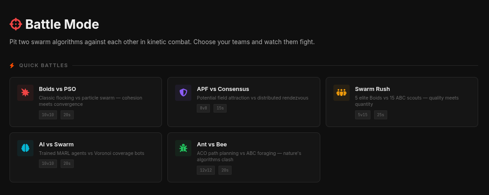
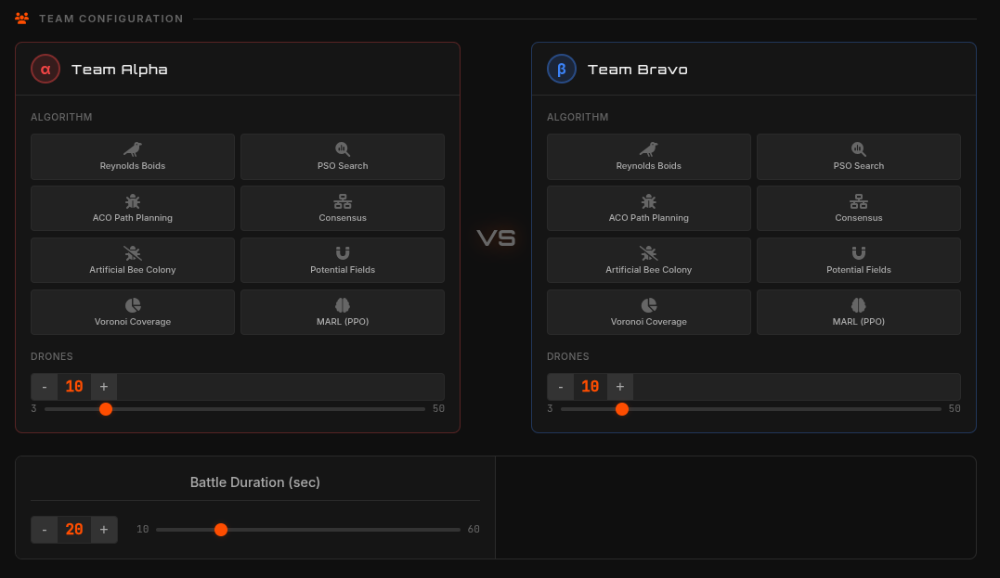
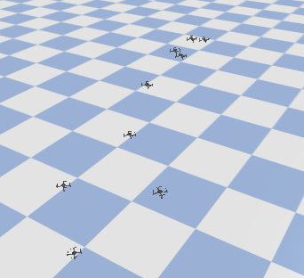
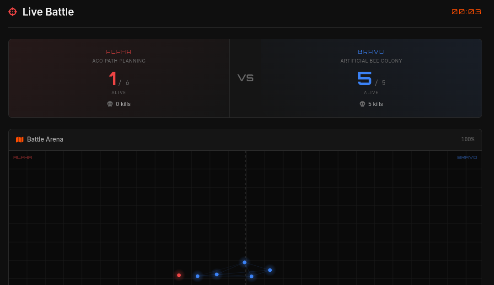

Battle Mode
Battle Mode is a competitive, multi-team simulation environment featuring kinetic elimination. Two distinct swarm algorithms (e.g., Flocking vs. PSO) are pitched against each other in a combat arena. Drones engage in physics-based combat where faster, aggressive drones eliminate slower ones upon high-velocity collision.

How to Run Battle Mode
You can launch a headless combat simulation directly from the command line by specifying the algorithms and team sizes:
python -m swarm_sim.battle.runner --algo-alpha flocking --algo-bravo pso --drones-alpha 10 --drones-bravo 10 --duration 20Alternatively, for the best visual experience, use the interactive Web Dashboard to configure, monitor, and analyze battles seamlessly.
Battle Workflow
The dashboard provides a complete, end-to-end combat visualization and analytics pipeline.
1. Team Configuration

Select the underlying behavioral algorithms for Team Alpha (Red) and Team Bravo (Blue). You can precisely balance the combat scenario by adjusting the drone count per team, the maximum simulation duration, and the unique job identifier for tracking.
2. Live Swarm Battle

Watch the battle unfold dynamically. The physics engine tracks real-time velocities and collisions. When drones collide, the one carrying lower kinetic energy is instantly eliminated and disabled. A live scoreboard and real-time kill-feed stream track every interaction.
3. Battle Results & Analytics

Once the dust settles, the dashboard presents comprehensive post-battle combat analytics. You can evaluate the final survival counts, K/D (Kill/Death) ratios, and structural team health to conclusively determine which swarm intelligence strategy thrives in adversarial environments.